Cell Structure
Callout
All cells, no matter what their type is; are small, membrane enclosed units, filled with a concentrated aqueous solution of chemicals and carry genetic material that enables them to multiply.
In our plant; There’s up to 100 million distinct species of living organisms. thus, cells vary enormously from unicellular microscopic organisms such as bacteria to multicellular complex organisms such as human.
The difference in size, shape, and chemical compounds of a cell determine its function.
-
Nerve cell are electric power generators made up with fibers that connects together to transport messages to the brain.
-
Spermatozoides are mal reproductive cells with long flagella that enables them to moves in the genital tract and fertilize the egg.
-
Thyroid cells are endocrine cells filled with secretory vesicles, producing hormones that regulates sleep cycle, temperature, heart beats…etc.
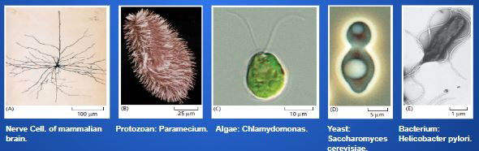
Prokaryotic cell vs Eukaryotic cell
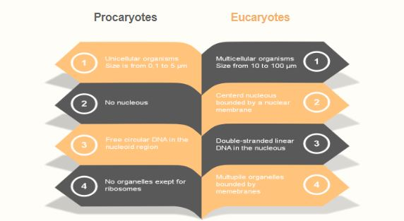
Callout
Animal cell vs Plant cell
Animal and plant cells have small fonctionnel compartiments bounded by membranes that float in the cytosol and connect with each other. This structures are called “Organelles”. The majority of organelles are present in both cells ensuring basic cell function. Some of them are specific to animal or plant cell.
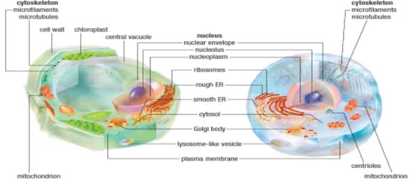
Callout
Choices:
Nucleoplasm
Cytosol
Cytoplasm
Column A
Fill in the Blanks
Fill in the Blanks
Callout
The Nucleus
Depending on the microscopique image and the diagrams please choose the only answer that does not match the nucleus description ?
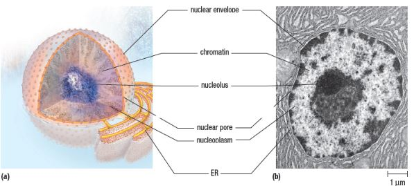
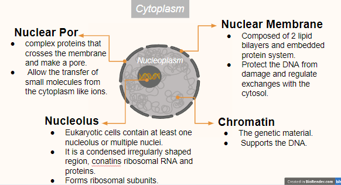
The Endomembrane system
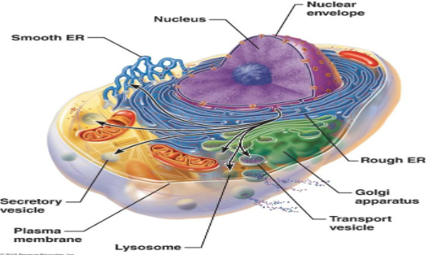
Fill in the Blanks
Callout
- Fatty acids and phosphate groups are added and proteins will be marked for delivery to specific locations and gain a three dimensional conformation. This organelle bud vesicles carrying mature proteins to their final destination.
- The RNA is translated by ribosomes to Amino acids that form polypeptide chains. Those are transferred inside the RER or migrate to the SER.
- Secretory vesicles fuse with the cell membrane and their content is released to the external environment or embedded into the cell membrane if it is structural.
- The polypeptide chain will be modified, as an example; the addition of polysaccharides to make glycoproteins. The deletion or addition of some aminoacids.
- The DNA is transcribed into RNA that moves out through the specific pores pores.
Mitochondria & Plastids
Mitochondria and Plastids are two bound-membrane organelles responsible for oxidative phosphorylation; a membrane-based mechanism that uses food or sunlight to generate ATP respectively called, photosynthesis and cellular respiration. in plants, this process takes place in a third folded membrane that forms ‘’Thylakoids’’ containing green pigments inside of the chloroplastes. In animals, the inner membrane of mitochondria that bends into folds known as “cristae” is the site of ATP generation process.
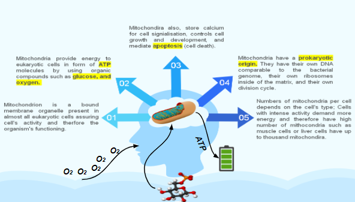
Mitochondria functioning
Chloroplasts functioning
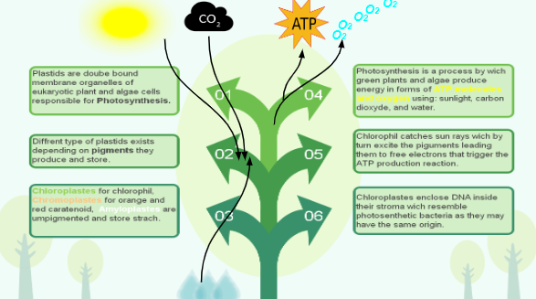
The Cytoskeleton
Cytoskeleton is a dynamic eukaryotic system formed by protein filaments that provide, reinforce, and organize the cell structure, help in cell division movements, and enable the inner organelles to move inside the cytosol.
.jpg)
Microtubule is a temporary element of the cytoskeleton that forms a dynamic scaffolding for this exocytose where it acts as tracks through which the motor proteins move along.
Secretory vesicle Budd from Golgi body carrying mature protein to be delivered outside of the cell.
Motor proteins are temporary elements of the cytoskeleton. They assemble and carry vesicles through the microtubule by converting chemical energy ‘’ATP’’ to mechanical movements.
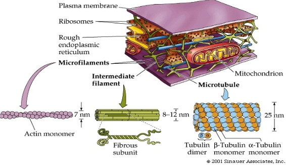
Extracellular Matrix
Extracellular Matrix (ECM) is a complex mixture of fibrous proteins and polysaccharides secreted by cells and vary in amount and type depending on the tissue. It supports, protects, and anchors cells; and separates and organizes tissues.
In animals, most ECMs are composed of proteins and carbohydrates. For example, bones are a type of ECM composed of mainly collagen (fibrous protein) hardened by mineral deposits. Bone tissue is the structural material of the vertebral skeleton.
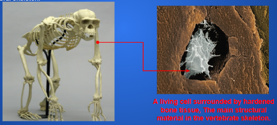
The Cell Wall
The cell wall is a porous structure found in prokaryotes and eukaryotes (plants, some fungi, and protists) functioning as an outer barrier that protects and gives shape to cells.
-
Primary wall is a thin and pliable layer of cellulose, allowing cell growth and constituting the ECM of the cell.
-
Secondary wall at maturity; the primary wall produces material in the exterior side of the cell that forms the second layer.
-
The cuticle is a waxy surface layer that protects exposed soft parts of the plants and limits water loss in hot and dry climates.
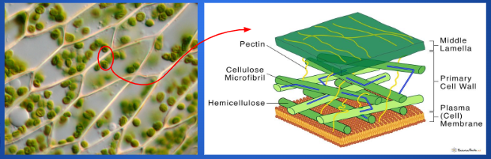
Flagella, Cilia, and Pseudopodes.
Flagella are long whiplike tails composed of an array of microtubules that propel cells in fluids in both prokaryotes and eukaryotes. such as the propulsion of sperm inside the female genital tract.
Cilia are tiny hair-like structures also composed of an array of microtubules that move motile cells through fluids in prokaryotes and stir fluids around stationary cells in eukaryotes. Such as cilia recovering the human airways that sweep away from the lungs and the mucus trapping external particles like dust.
Another special type of array of microtubules which is stabilized by the interlinks of proteins. The microtubules grow from a barrel-shaped organelle “centriole” that remains located below the array after it forms. For example; Amoebas form pseudopods (false feet) that move the cell and engulf targets.